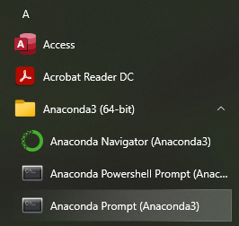

setting up a conda environment#
Note
This page provides instructions for creating a new conda environment using Anaconda Navigator, or using the Anaconda Command Prompt.
You only need to choose ONE of these methods for setting up the environment.
Danger
You should have already opened a GitHub account, installed git and GitHub Desktop, forked the EGM722 repository, cloned the repository to your computer, and installed Anaconda Navigator.
If you haven’t done all of these steps, please do so now before continuing.
{kind=link}
{kind=link}
{kind=link}
{kind=link}
{kind=link}
{kind=link}
{kind=link}
anaconda command prompt#
Note
You only need to do this if you are using a Windows machine. On MacOS or Linux, you can open a Terminal rather than the Anaconda Command Prompt.
From the Start menu, open the Anaconda Command Prompt:
{kind=link}
When you open the command prompt, you should see (base) next to the prompt:
(base) C:\Users\bob>
Warning
The Anaconda Command Prompt automatically loads conda so that you can use it; if you don’t see (base),
it likely means that you have opened the normal Command Prompt, and so you will see the following error when
you try to run a command with conda:
{kind=link}
Next, navigate to where you have cloned the repository using cd:
cd c:\Users\bob\projects\egm722
If you’re in the right place, you should see all of the files from the repository when you enter the dir command:
{kind=link}
Now, enter the following command:
conda env create -f environment.yml
This tells conda to create a new environment, using the “recipe” provided in environment.yml. You should
(eventually) see something like the following:
{kind=link}
This step may take some time2, but if all goes well, you will eventually see the following message:
{kind=link}
And that’s it. Once you have done this, you may want to open Anaconda Navigator and set up a new command
prompt link for your environment, following the instructions in setting up the command prompt.
Once you have the conda environment set up, you are ready to move on to configuring jupyter.
notes and references#
- 1
The exact number of packages may differ - the point is that we have only told conda to install a few of these, and conda has figured out the rest.
- 2
Conda can be notoriously slow, which is why there has been an effort to increase the speed/efficiency of the package “solver”: mamba. I am happy to help you get set up with mamba, but I am unsure about how well this works with Anaconda Navigator.